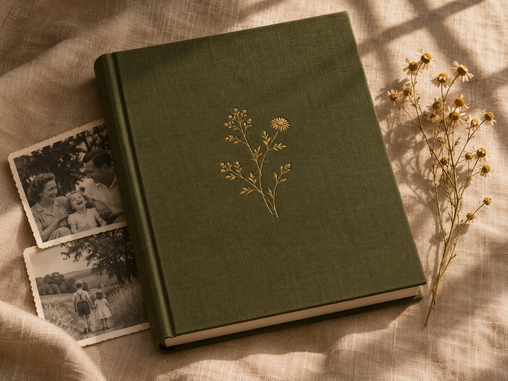

Создайте книгу
Выберите, для кого она, и что хотите собрать — истории, рецепты или всё вместе.
ПОДАРОК КО ДНЮ РОЖДЕНИЯ
Смешной случай на даче. Фирменный пирог. Фотография из детства. Соберите всё, что хочется сохранить, в одну семейную книгу.
Начните с одной истории. Остальные придут следом.

СОБРАТЬ БЛИЗКИХ НА СТРАНИЦАХ
Выберите, для кого она, и что хотите собрать — истории, рецепты или всё вместе.
Попробуйте форму участника. Вопросы помогут вспомнить сцену, слова и детали.
Сохраните голос каждого автора и найдите место для фотографий и любимого рецепта.
КАБИНЕТ ОРГАНИЗАТОРА · ДЕМО
Книги доступны в этом браузере. Очистка данных браузера удалит сохранённые материалы.
ПЕРВЫЙ ШАГ
ВАША КНИГА КО ДНЮ РОЖДЕНИЯ
ПОДЕЛИТЕСЬ ВОСПОМИНАНИЕМ
СОХРАНЕНО В ЭТОМ БРАУЗЕРЕ
Вспомнили что-то ещё? Можно добавить следующий рассказ или рецепт от своего имени.
ПРЕДПРОСМОТР
Печатный заказ подключим после проверки демо.
ВЫМЫШЛЕННЫЙ ПРИМЕР
Рядом с историей о даче — тот самый пирог. Попробуйте собрать свою книгу из этих материалов.
ЛЕНА · ПОДРУГА ДЕТСТВА
Однажды Нина оставила пирог остывать у окна. Мы вернулись к столу, а от пирога осталась одна корочка. На подоконнике сидел кот и невозмутимо мыл лапу.
«Ну хоть тарелку оставил», — сказала Нина и принесла варенье к чаю.
Лето 1998 года
СЕМЕЙНЫЙ РЕЦЕПТ
Этот пирог мы ели ещё тёплым, на крыльце.
3 яблока · 3 яйца · стакан муки · стакан сахара
Взбить яйца с сахаром, добавить муку. Выложить яблоки в форму, залить тестом и выпекать около 35 минут при 180 °C.